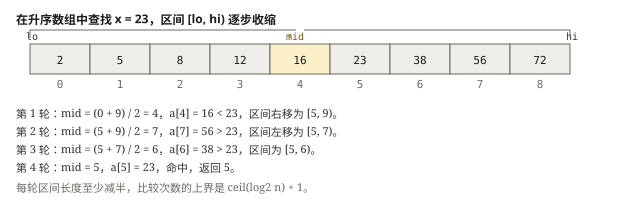

二分：三种写法、边界与答案判定
二分的实现错误几乎都来自同一个原因：区间含义没定死。把"答案落在 $[l,r]$ 还是 $[l,r)$"先写清楚，死循环与差一错误就不会出现。本文给出半开区间的两种边界查找、答案判定的统一模板，以及三分在单峰函数上的用法。
一、两种边界查找
有序数组上，"第一个不小于 $x$ 的位置"与"第一个大于 $x$ 的位置"是全部变体的母版，其余（第一个等于、最后一个等于、插入位置）都由它们加减得到。
int lower_bound_pos(const vector<int> &a, int x) {
int l = 0, r = (int)a.size(); // 答案在 [l, r)
while (l < r) {
int mid = l + (r - l) / 2;
if (a[mid] < x) l = mid + 1; else r = mid;
}
return l;
}
int upper_bound_pos(const vector<int> &a, int x) {
int l = 0, r = (int)a.size();
while (l < r) {
int mid = l + (r - l) / 2;
if (a[mid] <= x) l = mid + 1; else r = mid;
}
return l;
}区间取 $[l,r)$ 时，r 是"一定不满足"的哨兵位置，因此循环条件只能是 l < r，更新时 l = mid + 1 或 r = mid，两者都不能写成 mid 与 mid - 1 的混搭。写混之后要么漏掉一个元素，要么在 r = mid、l = mid 的组合下原地打转。
返回值可以等于 a.size()，表示所有元素都比 $x$ 小。调用方必须处理这个下标，直接拿去索引会越界——这是最常见的运行时错误，而且只在下述边界数据上出现：查找值大于全部元素，或数组为空。
mid = l + (r - l) / 2 的写法不只是为了避开 $l+r$ 溢出，它同时保证 mid < r，从而 r = mid 一定会让区间收缩。用 (l + r) / 2 在 64 位下不会溢出成负数，但 l+r 接近上限时仍可能溢出，统一写成前者即可。

二、二分答案
二分答案与二分查找是同一件事：把"下标"换成"候选值"，把"数组有序"换成"判定函数单调"。判定为真的一侧在右、为假的一侧在左时，求第一个真值点：
template <class F>
ll first_true(ll lo, ll hi, F check) { // 返回最小的 x 使 check(x) 为真
while (lo < hi) {
ll mid = lo + (hi - lo) / 2;
if (check(mid)) hi = mid; else lo = mid + 1;
}
return lo;
}三个前提必须成立。判定函数在候选区间上单调（真值集合是一段后缀）；区间端点已知至少有一个可行解，否则答案没有意义；判定本身的开销要能接受，因为总复杂度是 $O(\log(\text{值域})\times$ 判定 $)$。值域上界取错是另一类常见错误：可行解在上界之外时，函数会安静地返回上界，看起来像"恰好等于"。
如果要求"最后一个真值"，把判定的真假互换，或求出第一个假值再减一。实数二分则固定迭代次数：要求误差 $10^{-6}$ 时迭代 60 次足够，不必依赖 while (r - l > eps) 这种可能因浮点精度而不终止的写法。
三、三分与单峰
三分用于单峰函数求极值。整数定义域上，取两个三等分点比较函数值，丢掉不可能包含极值的一段；区间长度缩到 3 以内后直接枚举剩余点，避免在长度为 2 时出现死循环。
ll ternary_max(int l, int r, const vector<ll> &f) { // 单峰函数在 [l, r] 上的最大值
while (r - l > 3) {
int m1 = l + (r - l) / 3, m2 = r - (r - l) / 3;
if (f[m1] < f[m2]) l = m1; else r = m2;
}
ll best = LLONG_MIN;
for (int i = l; i <= r; ++i) best = max(best, f[i]);
return best;
}三分要求严格单峰。函数有平台段时，f[m1] < f[m2] 与 f[m1] == f[m2] 的处理方式不同：前者把 m1 保留在区间内，后者把 m2 移出，二者都只保证收敛到某一段极值平台，不会越过。若函数是"先增后减再增"，三分会给出错误答案，此时应改用枚举候选点或求导。
实数三分通常不如直接三分整数下标或使用二分套判定：浮点比较的误差累积会让终止条件难以设定。
四、易错点
- 半开区间与闭区间的更新式混用，典型组合
l = mid配r = mid - 1。 - 返回值可能等于
n，调用处未判越界。 - 二分答案的区间不含可行解，函数仍返回端点值。
- 判定函数里使用了未重置的全局状态，第二轮判定结果被污染。
- 三分用在非单峰数据上，或区间长度小于 3 时仍进入循环。
五、验证
代码在 GCC 16 上以 -std=c++17 -O2 -Wall -Wextra 编译无警告。对拍：随机有序数组（含重复值）2000 组，两个边界函数分别与 std::lower_bound、std::upper_bound 比对；first_true 用 $x^2\ge v$ 的判定与逐个枚举比对 500 组；三分在随机峰位的单峰数组上取最大值，与直接扫描比对 500 组。全部一致。